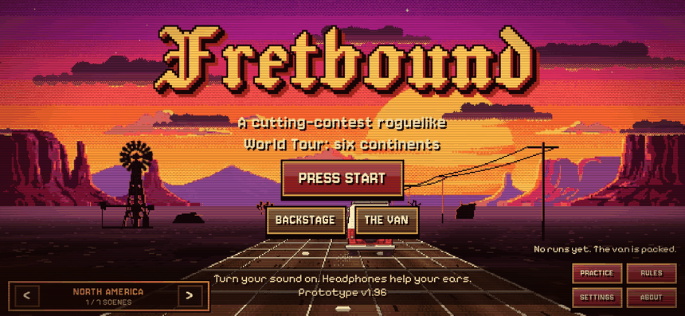
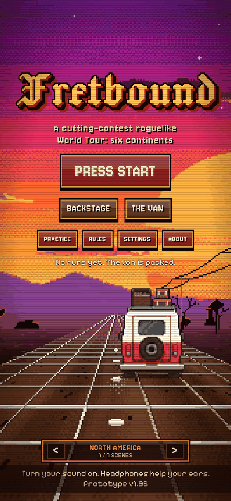
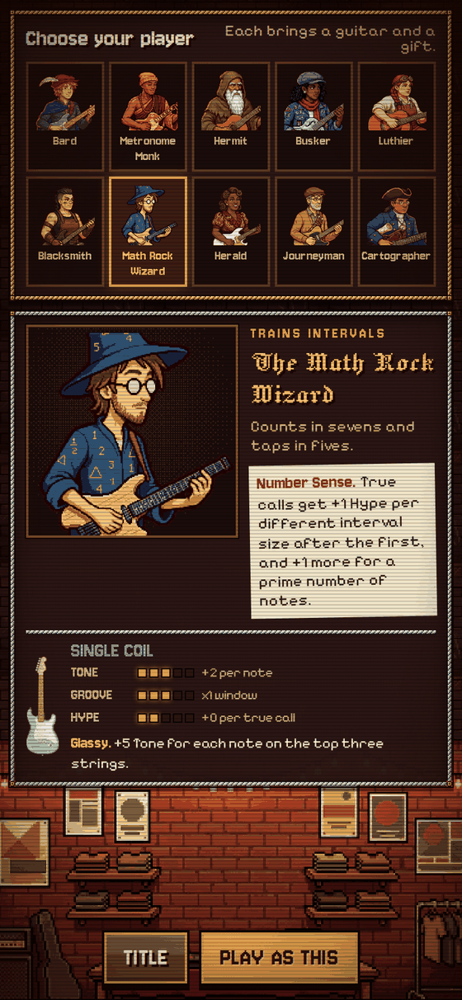
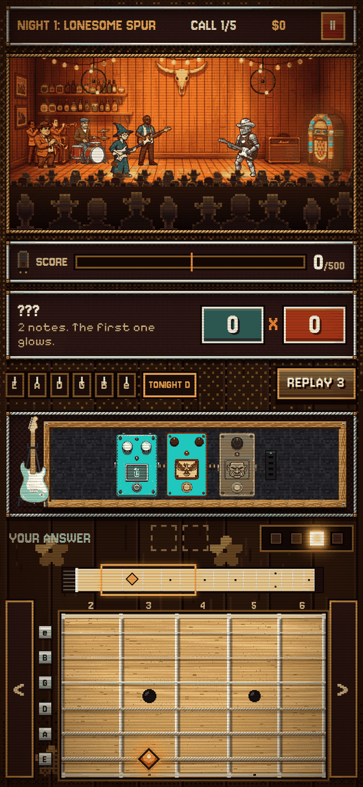
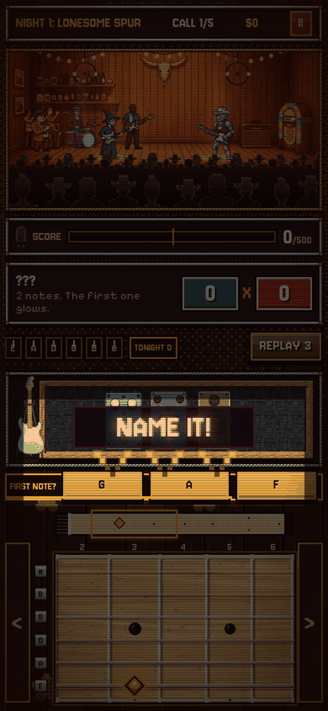
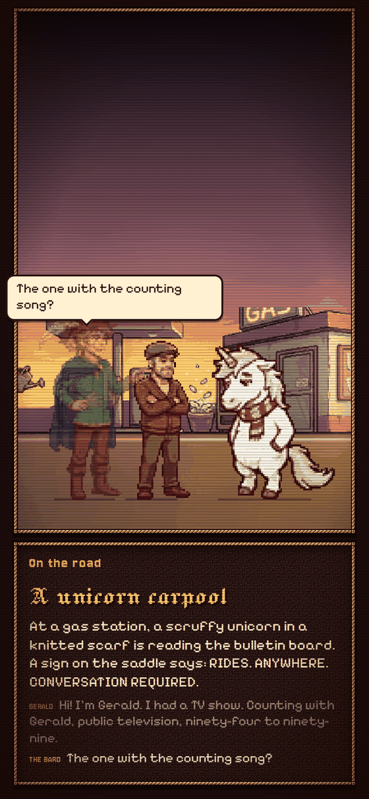
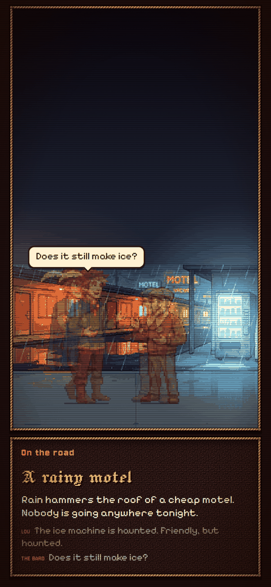
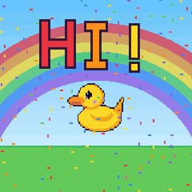

FretboundA roguelike ear-training game for guitarists
A rival plays a short phrase. You find it by ear and play it back on the fretboard. Win the night, buy pedals, hire a band, and take the whole thing around the world.

How a night goes
- Listen. A caller plays a short phrase. You only get to hear it, so use your ear.
- Find it. The first note glows. Play the rest anywhere on the neck. Higher up the neck scores more.
- Hit the groove. Play near the beat for extra Hype. Miss a note and a string snaps.
- Cash out. Reach the target before the setlist runs out, then spend your pay on pedals and strings.
A look around

The vanSeven title scenes, one for each continent you can tour.

Ten playersEach brings a guitar and a gift that changes how you score.

The duelYour band plays behind you. The caller's band plays behind them.

Name it!After a true call, the house sign lights up and asks for the first note's name.

On the road27 events between shows, each one a conversation. This is Gerald.

Lazy magicThe ice machine is haunted. Friendly, but haunted.
A casually magical world
Think more 100 gecs than Harry Potter. The world is ours, with microwaves and gas stations, plus a little lazy magic that never quite solves anything.
You play in a loose guild of traveling musicians. The callers you face are the spirits of a music's place: a siren for surf, a moon spirit at the crossroads, a flame for flamenco. The van is a little bit alive. You might get a ride from a scruffy unicorn who used to host a counting show on public television.
Real musicians never turn into characters. Every venue has liner notes about the real players behind its music, and those stay true.
What's in it
- 21 venues on 7 continents, from a honky-tonk in Bakersfield to the South Pole.
- 21 callers, each with their own sound, rule, band and voice.
- 10 players, 9 band and crew members and 36 pedals to build a run from.
- 27 road events. Every one is a conversation with its own painted backdrop.
- Everyone talks in a made-up mumble, made on the fly. There are no recordings.
- A note-name trainer that learns which notes you miss and which spots on the neck you know.
- Liner notes on the real music behind every place you visit.
- It's made for phones first, as one page. Turn your sound on. Headphones help.
Other projects by Josh

Rainbow modeA music toy for little hands on the M-VAVE FM-1. 94 friends, 21 beats and a color for every note.Take a look Double RainbowFirmware for the M-VAVE FM-1. 24 sounds got out of the Keeper's jars, and each one is a real synth engine you learn by playing. For ages ten and up.Take a look
Double RainbowFirmware for the M-VAVE FM-1. 24 sounds got out of the Keeper's jars, and each one is a real synth engine you learn by playing. For ages ten and up.Take a look